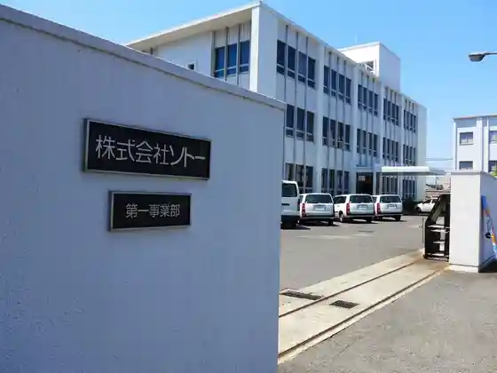
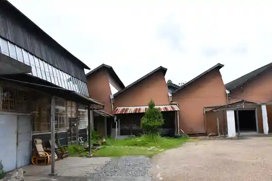

Uddodezain Park Ichi no Miya - Bo
Ichinomiya, Aichi · 0586-63-1120 · Official / source link
Soto
Ichinomiya, Aichi · Official / source link

Kuni Shima
Ichinomiya, Aichi · 0586-44-8107 · Official / source link
no Kogiri Ni (Hiramatsu Keori)
Ichinomiya, Aichi · 0586-44-0960 · Official / source link

Kuzu Ri Keori Kogyo
Ichinomiya, Aichi · 0586-87-3323 · Official / source link
Re-TAiL
Ichinomiya, Aichi · 0586-59-2105 · Official / source link
Owari Ichinomiya Konomono Mitsui Miya Kura Main Shop
Ichinomiya, Aichi · 0120-81-3896 · Official / source link
Ichinomiya Bisai Folk History Museum
Ichinomiya, Aichi · 0586-62-9711 · Official / source link
Myoko Tera
Ichinomiya, Aichi · Official / source link
Ichinomiya Museum
Ichinomiya, Aichi · 0586-46-3215 · Official / source link
Kingin Hana Shuzo
Ichinomiya, Aichi · 0586-73-3282 · Official / source link
Oe Kawa Greenway
Ichinomiya, Aichi · Official / source link
Kiso Kawa Tsutsumi Cherry Blossoms
Ichinomiya, Aichi · Official / source link
Ichinomiya Moningu
Ichinomiya, Aichi · 0586-72-4611 · Official / source link
Kiso Kawa Green Park
Ichinomiya, Aichi · 0586-28-8634 · Official / source link
Ichinomiya Migishi Setsuko Kinen Art Museum
Ichinomiya, Aichi · 0586-63-2892 · Official / source link
Masumida Shrine
Ichinomiya, Aichi · 0586-73-5196 · Official / source link
138 Tawa Park
Ichinomiya, Aichi · 0586-51-7105 · Official / source link